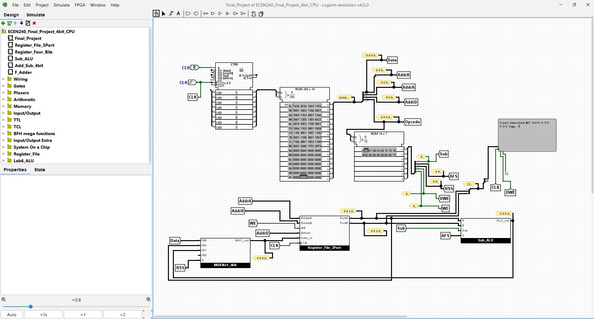

Watch demo
Watch demo
01Game
Chess Game
A playable chess experience centered on board interaction, turn management, and piece movement logic.
- Board state
- Movement rules
- Turn-based interaction
Software + Computer Engineering
I build interactive software and digital systems.
From desktop tools and mobile apps to a working 4-bit CPU, my projects pair practical interfaces with the logic underneath them.
ECEN 240 / New Project
Designed and simulated in Logisim-evolution, this circuit brings together a program counter, instruction memory, control logic, registers, an ALU, and output hardware.

Actual Logisim circuit
Final_Project running in Logisim-evolution 4.0.0The complete top-level data path is visible here while the loaded program prints character output to the TTY, including a name, arithmetic results, and a copy operation.
Open full-size screenshotFeatured engineering build
The top-level circuit connects 54 components and 154 wires. Its six circuits include a three-port register file, four-bit registers, an add/subtract ALU, and a full adder.
The ROM program is already embedded in the circuit; the separate text file is provided for inspection or reloading. Keep any prompted helper circuit libraries available when opening the project on another computer.
Run the Simulation
Download Logisim-evolution 4.0.0 or newer from the official releases page.
Choose File, then Open, and select ECEN240_Final_Project_4bit_CPU.circ.
Open Final_Project, select the Poke tool, and pulse CLR before starting.
Enable simulation ticks or click the clock manually, then watch the probes and TTY output.
Instruction ROM
Final_Proj_All_code.txt is a Logisim addressed-hex memory image for the
CPU's 256-word, 16-bit instruction ROM. The first line declares the file format and
each row places sixteen hexadecimal instructions at its displayed address.
In Final_Project, locate the large instruction ROM connected to the program counter.
Open that ROM's Edit Contents hex editor.
Use the editor's open/load command and select Final_Proj_All_code.txt.
Confirm address 00 begins with 1003 2700 1004 1109, then close the editor and save the circuit.
Pulse CLR, enable ticks, and watch the probes and TTY while the loaded program executes.
v3.0 hex words addressed
00: 1003 2700 1004 1109
10: 3001 1002 1100 3001
20: 3001 1106 3001 110fSoftware Projects
Each project has its source code and a video walkthrough available below.
Watch demo
A playable chess experience centered on board interaction, turn management, and piece movement logic.
 Watch demo
Watch demo
A responsive drawing workspace built around direct manipulation, creative controls, and immediate visual feedback.
 Watch demo
Watch demo
A focused utility app with dependable input handling, clear controls, and immediate arithmetic results.
 Watch demo
Watch demo
A mobile study experience designed for quick review sessions and simple, repeatable flash-card practice.
Capabilities
Interactive logic, state management, validation, and dependable user workflows.
Registers, ALUs, control signals, memory, and clock-driven circuit simulation.
Responsive layouts, visual feedback, and controls shaped around the task at hand.
Start a Conversation
Send me the details and I will have a clean email draft ready for you.